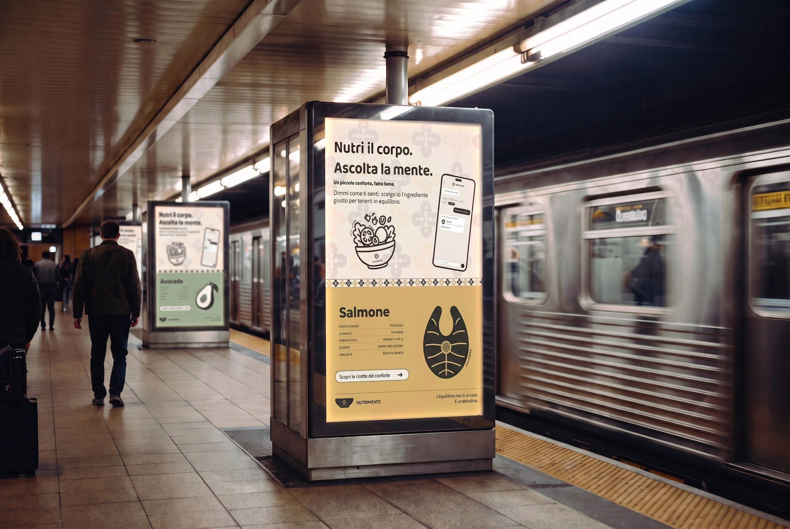
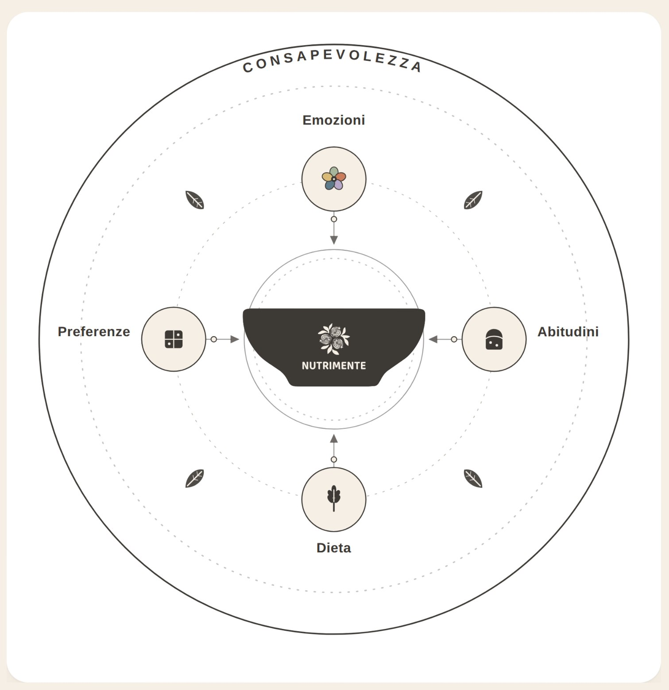
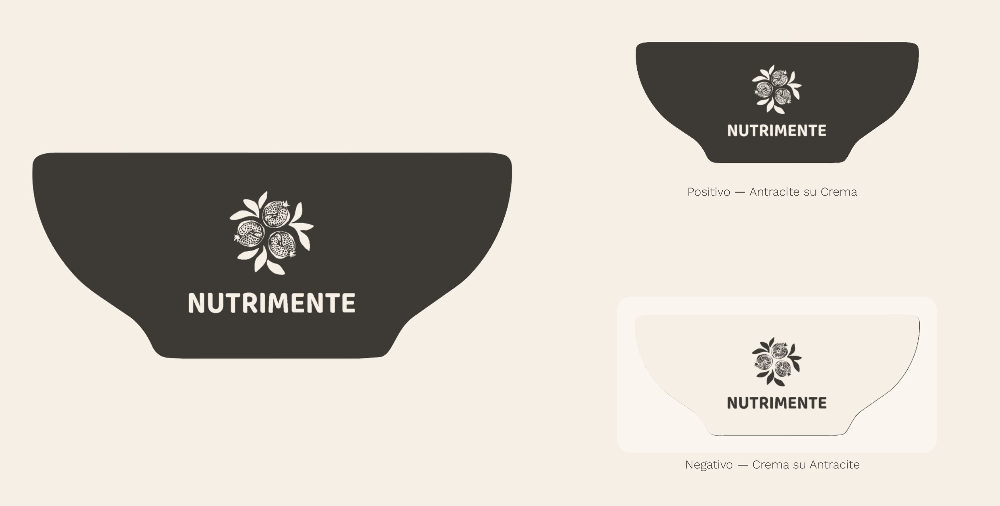

nutrimente
A visual identity for an app that brings artificial intelligence and emotions together: it asks how you feel, suggests foods to go with it, and always explains why.

Launch campaign · metro station mock-up
An app that works with any diet: it crosses your mood and your habits with verified nutrition sources, and never gives advice without its reason.
A quiet identity instead of a loud wellness one: a bowl, three pomegranates, five muted colours, never a face or an emoji.
Logo, palette, type and patterns, a print campaign, a pomegranate recipe leaflet, a booklet, a memory game and the app screens.
A friend who did their homework
It starts from my own experience. I changed my diet, from eating everything to vegetarian, without any guidance, and the first months were hard, above all for my body, until I learned by myself to listen to what I really needed. NUTRIMENTE is the support I didn't have then, for anyone changing how they eat, whatever their diet.
The name is a play on words. In Italian it joins nutrire, to nourish, and mente, mind. In Spanish it reads almost the same: nutre la mente, it nourishes the mind. In both languages it says the same thing: taking care of the mind, and eating with awareness. The payoff says it in five words: Nutri il corpo. Ascolta la mente.
The AI is an adviser, not a rule. Every food it suggests comes with a transparent card: what it gives you, and also what happens if you eat too much of it. The voice is the one of a caring, well-prepared friend: short sentences, first person, never clinical, never judging what you eat.

Concept map · four inputs around the bowl, awareness as the outer ring
A full bowl, three pomegranates
In Spanish the pomegranate is called granada, like my city. In Granada the fruit is everywhere: on the coat of arms, in the glazed ceramics, in the tile mosaics. Many seeds held together in one skin, an old image of abundance and of unity.
I took three pomegranates and drew them in line, the way they are painted on the ceramics and set into the mosaics at home. Three, for the three voices the project wants to feed: body, mind and soul. They bloom in negative from the centre of a solid bowl with soft edges.
The mark stays warm and human: nothing in it refers to artificial intelligence. It works in one colour only, anthracite on cream or cream on anthracite.

Positive, anthracite on cream · Negative, cream on anthracite